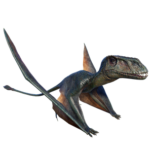

Useful Website
The pterosaur Dimorphodon is notable for the size of its head, which is much bigger than found in similar pterosaurs such as Pterodactylus. Its name translates to ‘two-form tooth’, in reference to the two sets of teeth it has, while Dimorphodon is one of the smaller species of pterosaur, weighing just a few kilograms and with a wingspan of around 1.5m.
